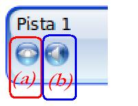

1.1. Aspectos Teóricos
La barra de edición es fundamental para trabajar con nuestros clips en la línea de tiempo y en las diversas pistas en las que ubicaremos nuestros clips.
Cuando utilicemos el botón de recorte (3) y deseemos dejar de utilizarlo hemos de seleccionar el botón (2) de selección.
|
1 |
Añadir pista |
Añade una nueva pista encima de las existentes |
|
2 |
Modo de selección |
El Modo de selección permite seleccionar clips y desplazarlos en las pistas. |
|
3 |
Modo cuchilla |
La herramienta de corte le permite dividir un clip en cualquier lugar donde haga clic. Si la opción de ajuste está activada, haciendo clic cerca del cabezal (la línea roja), el clip se dividirá exactamente en la posición del cabezal. |
|
4 |
Modo de redimensión |
El Modo de redimensión permite sujetar los extremos de un clip y arrastrarlos para redimensionarlo (o recortarlo). |
|
5 |
Modo de encaje |
La herramienta de ajuste posibilita que los clips se ajusten (o salten) al clip más próximo o al cabezal (si se encuentran cercanos) cuando los suelta. Las transiciones se ajustarán a los clips colindantes. Los clips y las transiciones también se adaptan a la posición del cabezal. |
|
6 |
Añadir Marcador |
Añade un nuevo marcador (o punto de partida), que permite rápidamente saltar de vuelta a este punto exacto mientras reproduces. |
Parte de los contenidos de este apartado han sido tomados de la web de Openshotusers.
La línea de tiempo visualiza su proyecto de una manera muy gráfica.
Cada clip (3) se representa con un rectángulo amarillo Cada pista (4 y 5) se
representa con un rectángulo azul. El cabezal o deslizador (la línea roja) (2)
representa la posición actual de reproducción (o previsualización) de su
proyecto. Esto lo podemos ver en la Ventana de Previsualización.
Haga clic en cualquier lugar de la regla para saltar a ese punto de la línea de tiempo. Si arrastra la regla, se visualizará el vídeo en la pantalla de previsualización a la velocidad que movamos dicho deslizador (2).
|
Id |
Componente |
Descripción |
|
1 |
Regla |
La regla muestra la escala temporal actual de la línea de tiempo. El tiempo total de cada clip, el total de toda la líneao tamaño del video final y la posición de cada clip en la pista. |
|
2 |
Cabezal de reproducción |
El cabezal de reproducción o deslizador representa la posición actual de reproducción de su ventana de previsualización. |
|
3 |
Clip |
Un clip representa un archivo de audio, imagen o vídeo. |
|
4 y 5 |
Pista |
Una pista es similar a una capa. Las pistas que están encima muestran vídeo e imágenes sobre las que están debajo. No hay límite en el número de pistas que puede tener un proyecto. |
Parte de las definiciones han sido tomadas de openshotusers.
Las pistas es como cada una de nuestras "capas" de nuestro video final. En ellas (1)(2) iremos ubicando cada uno de los clips o fragmentos de ellos.
Utilizando la herramienta de edición cuchilla, podemos partir un clip de una determinada pista en dos o más partes y, utilizando la herramienta de edición seleccionar, desplazar ese fragmento a otras pistas y en diferentes posiciones en la línea de tiempo.
En la imagen inferior observamos cuatro fragmentos de un mismo clip (3), (4) y (5). Desplazado el (4) a la pista dos y solapando el clip primero (5) para poder aplicar una transición (6) entre los clips .
Por su parte el clip (3) se solapa sobre el (4) y no disponemos de transición.

Podemos eliminar el video o el audio de las pistas. En la zona izquierda disponemos de dos botones para ello. Si marcamos el botón (a) ocultaremos el video en toda la pista; es decir, en todos los clips de dicha pista. Esta opción es válida cuando deseamos el sonido de un clip, pero no su video.
Por su parte, si marcamos el botón (b) sonido se ocultará o silenciará el sonido de todos los clips que haya en la pista.
Si deseamos silenciar u ocultar el sonido de un clip determinado seleccionamos la opción en dicho clip o fragmento.
En la imagen superior los clips identificados como (4) y (5) han silenciado el audio de sus clips, los identificados como (3) han ocultado el video del clip.
En el caso de la pista 1, es un fichero de sonido y no es necesario ocultar el video puesto que no dispone del mismo, por su parte, un clip de video sin sonido no es necesario silenciar su contenido.
Jo.R.C.A. 2004 - 2011

Edición de Audio y Video con Software Libre by José Ramón Cerdeira Alonso is licensed under a Creative Commons Reconocimiento-No comercial-Compartir bajo la misma licencia 3.0 España License